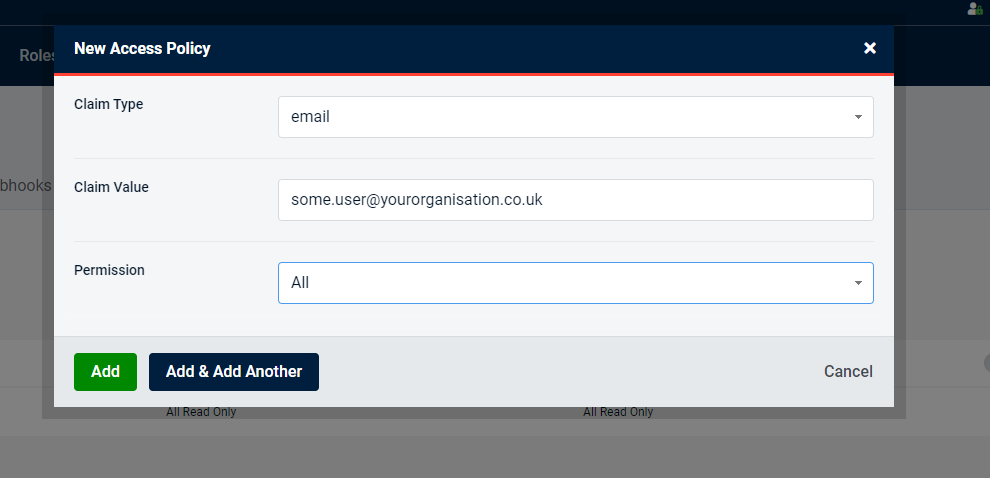
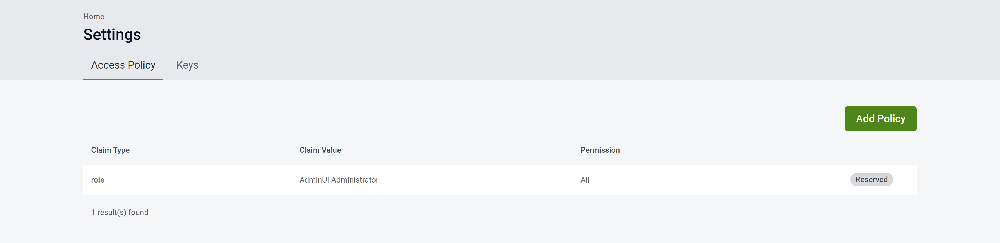
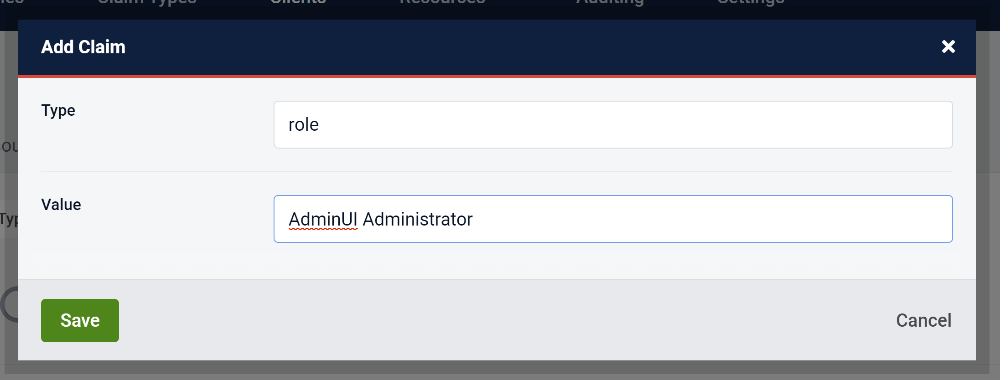

Introduction
Access Policy maps claim values to permissions, each time a user attempts to perform some administrator functionality their claims are evaluated against the policy to produce a set of permissions. Only if they have the appropriate permission will they be able to execute the functionality.
Managing Your Access Policy
In order to manage your access policy, you will need to have the ‘All’ permission.
Access Policy Management is available in the Settings tab, new policies can be added and removed here. After making any changes you will need to save your changes in order for them to take effect.

To make use of this new policy, you will need to give this new claim to a user. Users can get permissions from multiple access policy statements.
Only users with the ‘All’ permission are able to assign claims referenced in the access policy to themselves or other users.
Warning: any user that already has the claim in the access policy you are adding will be given the permission. This is also true if an access policy is removed, where any users with that claim will lose that permission.
Permissions
Users without any permissions will be greeted with an unauthorized screen after logging in.
There are three read/write permissions available, each giving access to different actions within AdminUI:
User ManagerThis permission grants control over User and Role managementIdentity Server ManagerThis permission allows users to create and modify ClaimTypes, Clients, Identity Resources, and Protected ResourcesAllThis permission allows all of the above and control over Access Policy Management
As of AdminUI 5.5.0/4.6.0 there are 3 read only permissions available:
User Manager Read OnlyThis permission a user the ability to view Users and RolesIdentity Server Manager Read OnlyThis permission allows to view ClaimTypes, Clients, Identity Resources, and Protected ResourcesAll Read OnlyThis permission combines the two read only permissions above
By default, the 'AdminUI Administrator' role is set up by default with the All permission. This mapping cannot be removed.
Access Policies and External User Stores
If you are using an external user store (e.g. AzureAD) you may need to create access policies based on known claim types for your users.
For example, you may want to create an access policy based on an external user's email claim type.
To do this, navigate to the Access Policy view and click the 'Add Policy' button.
Next, choose the claim type you wish to create the access policy against (in our case the email claim type), as well as the claim value you expect to satisfy the policy.
Lastly, choose the AdminUI permission you wish to grant users who satisfy these conditions.

Adding an Access Policy to a Client or User
After creating your Access Policy as described in the Managing Your Access Policy section above you can add it to your client by clicking the 'Add Claim' button.
You will be greeted with a modal that requires you to enter the 'Type' and 'Value' of the Claim you are wishing to add. These values correspond to the Claim Type and Claim Value of the access policy you have created.
For example, if you are adding a client that requires the AdminUI Administrator Access Policy as shown below:

You should be entering the Claim Type 'role' and the Claim Value 'AdminUI Administrator' into the 'Add Claim' modal in the edit client view as shown below.

After saving these changes, your client should be able to interact with the AdminUI API correctly.
Viewing Client Access Policies
From the Clients page, click the edit client button then navigate to the 'Advanced' tab, then click the 'Claims' button. Here you can see the various Claims assigned to a client and is where you add your Access Policies to your clients.